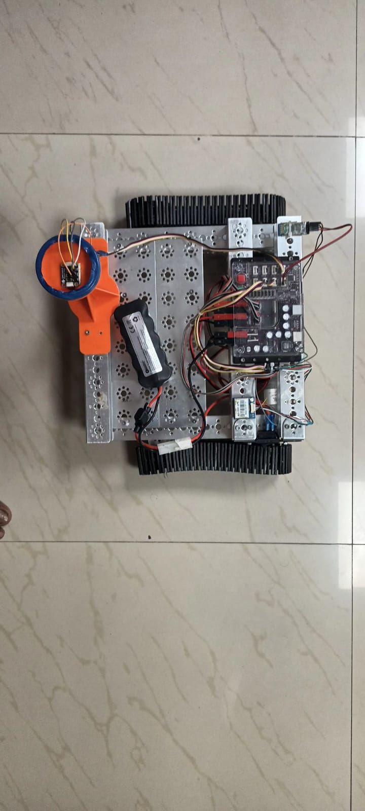
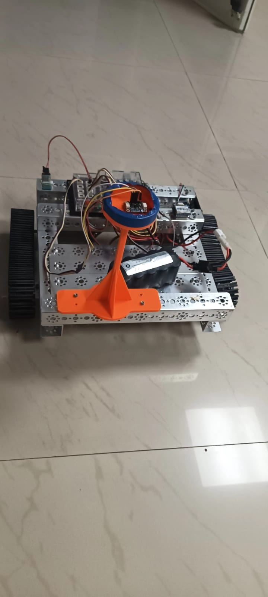

Input stage
Read sensors
TinyGPSPlus decodes incoming position fixes while the QMC5883P provides magnetic heading. Bluetooth is checked for an emergency stop command every loop.
while (GPS_Serial.available()) gps.encode(GPS_Serial.read());
PRIZM · GPS · QMC5883P · Bluetooth
Run a browser simulation of the same navigation decisions used by the firmware: smooth a GPS position, calculate target bearing, turn toward the route, and advance through each waypoint.
Navigation simulator
Try different behavior
Explore the firmware
Select a stage to see what the robot receives, calculates, and changes.
Input stage
TinyGPSPlus decodes incoming position fixes while the QMC5883P provides magnetic heading. Bluetooth is checked for an emergency stop command every loop.
while (GPS_Serial.available()) gps.encode(GPS_Serial.read());
Physical build
A differential-drive platform with the PRIZM controller, GPS, compass, HC-05, motors, and battery mounted on a metal chassis.

